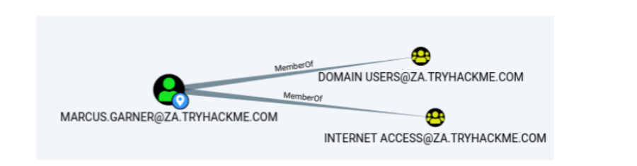

Using Bloodhound
Enumeration Through Bloodhound
Bloodhound History
For a significant amount of time, red teamers (and, unfortunately, attackers) had the upper hand. So much so that Microsoft integrated their own version of Bloodhound in its Advanced Threat Protection solution. It all came down to the following phrase:
"Defenders think in lists, Attackers think in graphs." - Unknown
Bloodhound allowed attackers (and by now defenders too) to visualise the AD environment in a graph format with interconnected nodes. Each connection is a possible path that could be exploited to reach a goal. In contrast, the defenders used lists, like a list of Domain Admins or a list of all the hosts in the environment.
This graph-based thinking opened up a world to attackers. It allowed for a two-stage attack. In the first stage, the attackers would perform phishing attacks to get an initial entry to enumerate AD information. This initial payload was usually incredibly noisy and would be detected and contained by the blue team before the attackers could perform any actions apart from exfiltrating the enumerated data. However, the attackers could now use this data offline to create an attack path in graph format, showing precisely the steps and hops required. Using this information during the second phishing campaign, the attackers could often reach their goal in minutes once a breach was achieved. It is often even faster than it would take the blue team to receive their first alert. This is the power of thinking in graphs, which is why so many blue teams have also started to use these types of tools to understand their security posture better.
Sharphound
You will often hear users refer to Sharphound and Bloodhound interchangeably. However, they are not the same. Sharphound is the enumeration tool of Bloodhound. It is used to enumerate the AD information that can then be visually displayed in Bloodhound. Bloodhound is the actual GUI used to display the AD attack graphs. Therefore, we first need to learn how to use Sharphound to enumerate AD before we can look at the results visually using Bloodhound.
There are three different Sharphound collectors:
▪ Sharphound.ps1 - PowerShell script for running Sharphound. However, the latest release of Sharphound has stopped releasing the Powershell script version. This version is good to use with RATs since the script can be loaded directly into memory, evading on-disk AV scans.
▪ Sharphound.exe - A Windows executable version for running Sharphound.
▪ AzureHound.ps1 - PowerShell script for running Sharphound for Azure (Microsoft Cloud Computing Services) instances. Bloodhound can ingest data enumerated from Azure to find attack paths related to the configuration of Azure Identity and Access Management.
Note: Your Bloodhound and Sharphound versions must match for the best results. Usually there are updates made to Bloodhound which means old Sharphound results cannot be ingested. This network was created using Bloodhound v4.1.0. Please make sure to use this version with the Sharphound results.
When using these collector scripts on an assessment, there is a high likelihood that these files will be detected as malware and raise an alert to the blue team. This is again where our Windows machine that is non-domain-joined can assist. We can use the runas command to inject the AD credentials and point Sharphound to a Domain Controller. Since we control this Windows machine, we can either disable the AV or create exceptions for specific files or folders, which has already been performed for you on the THMJMP1 machine. You can find the Sharphound binaries on this host in the C:\Tools\ directory. We will use the SharpHound.exe version for our enumeration, but feel free to play around with the other two. We will execute Sharphound as follows:
Sharphound.exe --CollectionMethods <Methods> --Domain za.tryhackme.com --ExcludeDCs
Parameters explained:
▪ CollectionMethods - Determines what kind of data Sharphound would collect. The most common options are Default or All. Also, since Sharphound caches information, once the first run has been completed, you can only use the Session collection method to retrieve new user sessions to speed up the process.
▪ Domain - Here, we specify the domain we want to enumerate. In some instances, you may want to enumerate a parent or other domain that has trust with your existing domain. You can tell Sharphound which domain should be enumerated by altering this parameter.
▪ ExcludeDCs -This will instruct Sharphound not to touch domain controllers, which reduces the likelihood that the Sharphound run will raise an alert.
You can find all the various Sharphound parameters here. It is good to overview the other parameters since they may be required depending on your red team assessment circumstances.
https://bloodhound.readthedocs.io/en/latest/data-collection/sharphound-all-flags.html
Using your SSH PowerShell session from the previous task, copy the Sharphound binary to your AD user's Documents directory:
We will run Sharphound using the All and Session collection methods:
In Our Case:
SharpHound.exe --CollectionMethods All --Domain za.tryhackme.com --ExcludeDCs
Note: For Session Information only:
SharpHound.exe --CollectionMethods Session --Domain za.tryhackme.com --ExcludeDCs
It will take about 1 minute for Sharphound to perform the enumeration. In larger organisations, this can take quite a bit longer, even hours to execute for the first time. Once completed, you will have a timestamped ZIP file in the same folder you executed Sharphound from.
We can now use Bloodhound to ingest this ZIP to show us attack paths visually.
Bloodhound
As mentioned before, Bloodhound is the GUI that allows us to import data captured by Sharphound and visualise it into attack paths. Bloodhound uses Neo4j as its backend database and graphing system. Neo4j is a graph database management system. If you're using the AttackBox, you may use the red Bloodhound icon in the Dock to launch it. In all other cases, make sure Bloodhound and neo4j are installed and configured on your attacking machine. Either way, it is good to understand what happens in the background. Before we can start Bloodhound, we need to load Neo4j:
In another Terminal tab, run bloodhound --no-sandbox. This will show you the authentication GUI:
The default credentials for the neo4j database will be neo4j:neo4j. Use this to authenticate in Bloodhound. To import our results, you will need to recover the ZIP file from the Windows host. The simplest way is to use SCP command on your AttackBox:
In Our Case:
neo4j:Admin@123
scp <AD Username>@THMJMP1.za.tryhackme.com:C:/Users/<AD Username>/Documents/<Sharphound ZIP> .
Once you provide your password, this will copy the results to your current working directory. Drag and drop the ZIP file onto the Bloodhound GUI to import into Bloodhound. It will show that it is extracting the files and initiating the import.
Attack Paths
There are several attack paths that Bloodhound can show. Pressing the three stripes next to "Search for a node" will show the options. The very first tab shows us the information regarding our current imports.

Note that if you import a new run of Sharphound, it would cumulatively increase these counts. First, we will look at Node Info. Let's search for our AD account in Bloodhound. You must click on the node to refresh the view. Also note you can change the label scheme by pressing LeftCtrl.
We can see that there is a significant amount of information returned regarding our use. Each of the categories provides the following information:
• Overview - Provides summaries information such as the number of active sessions the account has and if it can reach high-value targets.
• Node Properties - Shows information regarding the AD account, such as the display name and the title.
• Extra Properties - Provides more detailed AD information such as the distinguished name and when the account was created.
• Group Membership - Shows information regarding the groups that the account is a member of.
• Local Admin Rights - Provides information on domain-joined hosts where the account has administrative privileges.
• Execution Rights - Provides information on special privileges such as the ability to RDP into a machine.
• Outbound Control Rights - Shows information regarding AD objects where this account has permissions to modify their attributes.
• Inbound Control Rights - Provides information regarding AD objects that can modify the attributes of this account.
If you want more information in each of these categories, you can press the number next to the information query. For instance, let's look at the group membership associated with our account. By pressing the number next to "First Degree Group Membership", we can see that our account is a member of two groups.

Next, we will be looking at the Analysis queries. These are queries that the creators of Bloodhound have written themselves to enumerate helpful information.
Under the Domain Information section, we can run the Find all Domain Admins query. Note that you can press LeftCtrl to change the label display settings.
The icons are called nodes, and the lines are called edges. Let's take a deeper dive into what Bloodhound is showing us. There is an AD user account with the username of T0_TINUS.GREEN, that is a member of the group Tier 0 ADMINS. But, this group is a nested group into the DOMAIN ADMINS group, meaning all users that are part of the Tier 0 ADMINS group are effectively DAs.
Furthermore, there is an additional AD account with the username of ADMINISTRATOR that is part of the DOMAIN ADMINS group. Hence, there are two accounts in our attack surface that we can probably attempt to compromise if we want to gain DA rights. Since the ADMINISTRATOR account is a built-in account, we would likely focus on the user account instead.
Each AD object that was discussed in the previous tasks can be a node in Bloodhound, and each will have a different icon depicting the type of object it is. If we want to formulate an attack path, we need to look at the available edges between the current position and privileges we have and where we want to go. Bloodhound has various available edges that can be accessed by the filter icon:
These are also constantly being updated as new attack vectors are discovered. We will be looking at exploiting these different edges in a future network. However, let's look at the most basic attack path using only the default and some special edges. We will run a search in Bloodhound to enumerate the attack path. Press the path icon to allow for path searching.
Our Start Node would be our AD username, and our End Node will be the Tier 1 ADMINS group since this group has administrative privileges over servers.
If there is no available attack path using the selected edge filters, Bloodhound will display "No Results Found". Note, this may also be due to a Bloodhound/Sharphound mismatch, meaning the results were not properly ingested. Please make use of Bloodhound v4.1.0. However, in our case, Bloodhound shows an attack path. It shows that one of the T1 ADMINS, ACCOUNT, broke the tiering model by using their credentials to authenticate to THMJMP1, which is a workstation. It also shows that any user that is part of the DOMAIN USERS group, including our AD account, has the ability to RDP into this host.
We could do something like the following to exploit this path:
1. Use our AD credentials to RDP into THMJMP1.
2. Look for a privilege escalation vector on the host that would provide us with Administrative access.
3. Using Administrative access, we can use credential harvesting techniques and tools such as Mimikatz.
4. Since the T1 Admin has an active session on THMJMP1, our credential harvesting would provide us with the NTLM hash of the associated account.
This is a straightforward example. The attack paths may be relatively complex in normal circumstances and require several actions to reach the final goal. If you are interested in the exploits associated with each edge, the following Bloodhound documentation provides an excellent guide. Bloodhound is an incredibly powerful AD enumeration tool that provides in-depth insights into the AD structure of an attack surface. It is worth the effort to play around with it and learn its various features.
https://bloodhound.readthedocs.io/en/latest/data-analysis/edges.html
Session Data Only
The structure of AD does not change very often in large organisations. There may be a couple of new employees, but the overall structure of OUs, Groups, Users, and permission will remain the same.
However, the one thing that does change constantly is active sessions and LogOn events. Since Sharphound creates a point-in-time snapshot of the AD structure, active session data is not always accurate since some users may have already logged off their sessions or new users may have established new sessions. This is an essential thing to note and is why we would want to execute Sharphound at regular intervals.
A good approach is to execute Sharphound with the "All" collection method at the start of your assessment and then execute Sharphound at least twice a day using the "Session" collection method. This will provide you with new session data and ensure that these runs are faster since they do not enumerate the entire AD structure again. The best time to execute these session runs is at around 10:00, when users have their first coffee and start to work and again around 14:00, when they get back from their lunch breaks but before they go home.
You can clear stagnant session data in Bloodhound on the Database Info tab by clicking the "Clear Session Information" before importing the data from these new Sharphound runs.
Benefits
• Provides a GUI for AD enumeration.
• Has the ability to show attack paths for the enumerated AD information.
• Provides more profound insights into AD objects that usually require several manual queries to recover.
Drawbacks
• Requires the execution of Sharphound, which is noisy and can often be detected by AV or EDR solutions.